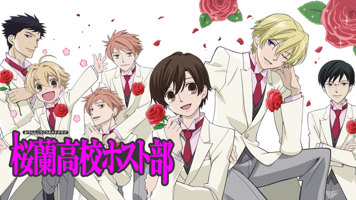
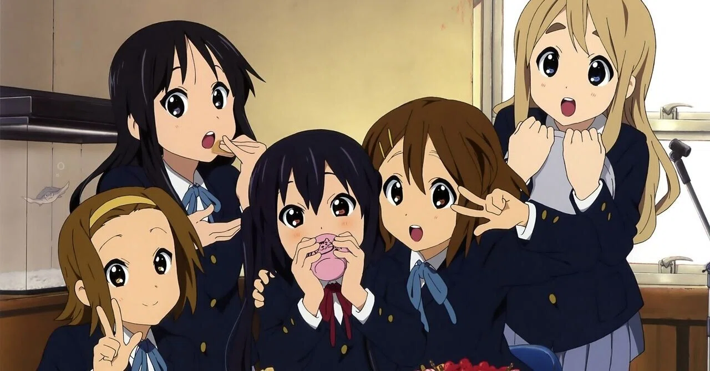
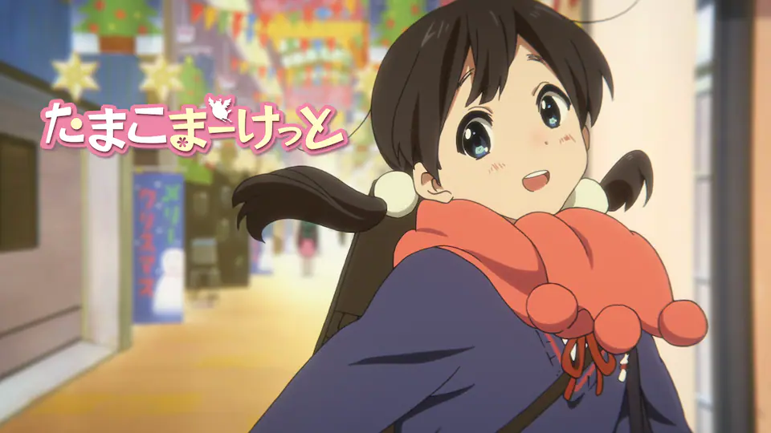
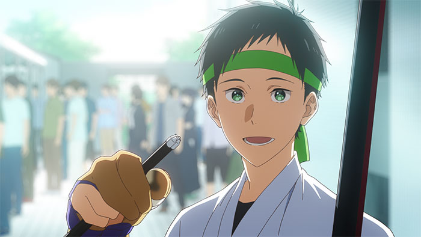

桜蘭ホスト部
続きを読む 閉じる 『桜蘭高校ホスト部』は、個性豊かなキャラクターたちが織りなす笑いと、性別や階級を超えた温かな友情が魅力の作品です。特に、主人公ハルヒの自然体な姿勢と、ホスト部メンバーとのユーモラスなやり取りが、心を和ませてくれます。
けいおん
続きを読む 閉じる 🎀 ゆるやかで心温まる日常 物語は、軽音楽部に入部した女子高生たちが、放課後にお茶を楽しんだり、音楽を練習したりする日常を描いています。 彼女たちの何気ない会話や行動が、視聴者に癒しと笑顔を届けてくれます。特に、主人公・平沢唯の天然な性格や、メンバーとの掛け合いが微笑ましく、見ているだけで心が和みます。
たまこまーけっと
続きを読む 閉じる 商店街の人々との温かな交流や、季節ごとの行事、家族との絆が丁寧に描かれており、観る人の心を癒してくれます。 また、京都アニメーションならではの繊細でやわらかな作画や、心地よい音楽も作品の雰囲気を引き立てています。 日常に疲れたとき、心をほっとさせたいときにぴったりの作品です。
ツルネ
続きを読む 閉じる 弓道を通じて仲間との絆や成長を描いた心温まる青春アニメです。美しい作画と繊細な演出が、登場人物たちの心情を豊かに表現しています。 弓道の技術や精神性がリアルに描かれており、視覚と聴覚で作品の世界観に引き込まれます。また、キャラクター同士の微妙な感情の変化や、試合での緊張感が丁寧に描かれており、観る人の心を打ちます。 青春の切なさや仲間との絆を感じたい方におすすめの作品です。
ウィンドブレイカー
続きを読む 閉じる
高品質な作画と、戦闘シーンの臨場感が視覚と聴覚で楽しめます。 主人公・桜遥をはじめ、仲間たちの過去や信念が丁寧に描かれ、成長する姿に共感が集まっています。